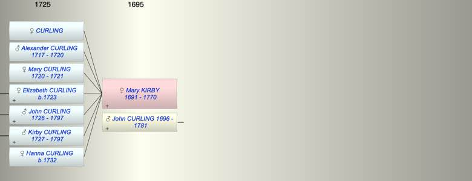

| [Index] |
| Mary KIRBY (1691 - 1770) |
|  |
| b. 1691 at St Peters, Thanet |
| m. John CURLING (1696 - 1781) |
| d. 29 Jul 1770 at Barham aged 79 |
| Children (7): |
| CURLING |
| Alexander CURLING (1717 - 1720) |
| Mary CURLING (1720 - 1721) |
| Elizabeth CURLING (1723 - ) |
| John CURLING (1726 - 1797) |
| Kirby CURLING (1727 - 1797) |
| Hanna CURLING (1732 - ) |
| Events in Mary KIRBY (1691 - 1770)'s life | |||||
| Date | Age | Event | Place | Notes | Src |
| Married John CURLING | Note 1 | ||||
| 1691 | Mary KIRBY was born | St Peters, Thanet | Note 2 | ||
| 1717 | 26 | Birth of son Alexander CURLING | Barham | Note 3 | |
| 1720 | 29 | Birth of daughter Mary CURLING | Barham | Note 4 | |
| 25 Aug 1720 | 29 | Death of son Alexander CURLING (aged 3) | Barham | Note 5 | |
| 06 Apr 1721 | 30 | Death of daughter Mary CURLING (aged 1) | Barham | Note 6 | |
| 1723 | 32 | Birth of daughter Elizabeth CURLING | Barham | Note 7 | |
| 1726 | 35 | Birth of son John CURLING | Barham | Note 8 | |
| 1727 | 36 | Birth of son Kirby CURLING | Barham | Note 9 | |
| 1732 | 41 | Birth of daughter Hanna CURLING | Barham | Note 10 | |
| 29 Jul 1770 | 79 | Mary KIRBY died | Barham | aged 78 ex MI at Barham | |
| Created on a Mac™ using iFamily for Mac™ on 8 Oct 2023 |